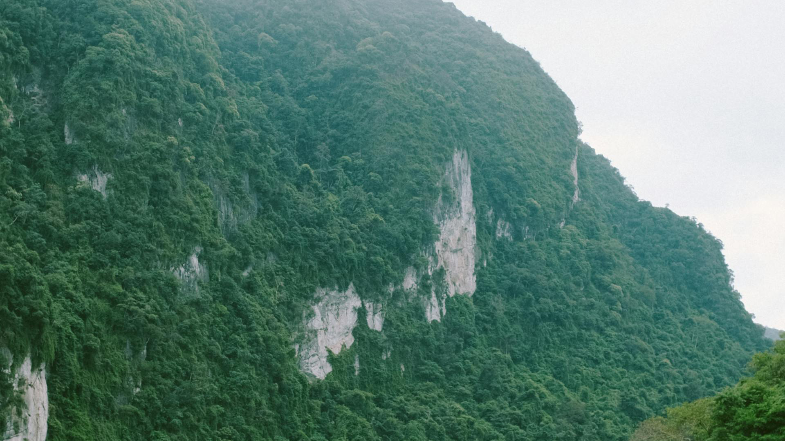
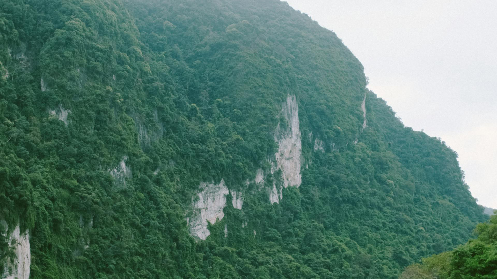

أرض بلا هواء
تؤثر المصانع بالسلب علي هوائنا مما ينتجب عنه زيادة هائلة في ال....المزيد
تؤثر المصانع بالسلب علي هوائنا مما ينتجب عنه زيادة هائلة في ال....المزيد
لنحافظ علي المحيط يجب علينا جميعا ان نقلل من اسنهلاك النفط ...المزيد
كما نعلم جميعا ان الكوكب يتغير يوما تلو الاخر وتزيد نسبة الحرائق و...المزيد
ماذا لو اختفت المياه؟ مصير يقودنا التغيير المناخي نحوه بثبات. فالسحب تصبح شيئاً من الماضي، كونها مكونة من تبخر المياه. ومع ذلك تختفي الأمطار والثلوج والأعاصير والعواصف. وستكون التقلبات الجوية الوحيدة بأنماط الرياح. اختفاء المياه يعني اختفاء القطبين. ومع زوال غطائها الثلجي، ستتحول القارة القطبية الجنوبية إلى أرض قاحلة تبرزها سلاسل الجبال وأودية ضخمة. وفي نهاية المطاف ستتلاشى الحياة النباتية كونها خسرت مصدر الحياة، المياه، ومعها الحيوانات والبشر. ستتخذ أرضنا ملامح صحراء ضخمة، وسيشهد الكوكب حرارات شبيهة في الغليان، فالمحيطات تعمل كخزان حرارة للأرض، تمتص ثاني أكسيد الكربون من الهواء ما يمنع ارتفاع الحرارة. بلا المحيطات، سينتشر ثاني أكسيد الكربون في الجو، رافعاً بذلك الحرارة إلى درجات قياسية على غرار ما حصل لكوكب الزهرة الذي يعيش في ظل حرارة تبلغ 460 درجة مئوية.
تتواجد الحيوانات والكائنات على كوكب الأرض منذ آلاف السنين، سواء الحيوانات البرية أو البحرية، ويمكن تعريف الحياة البحرية بأنها تلك النباتات والحيوانات والكائنات الحية الأخرى، التي تنمو وتعيش في المسطحات المائية كالمحيطات والبحار، ومن هذه الكائنات الحية، العوالق والطحالب والأعشاب البحرية والأيكة الساحلية والأسماك بمختلف أنواعها والفقمات والدلافين والسلاحف البحرية والحيتان والقروش وثعالب الماء، والعديد والكثير من الكائنات الحية الأخرى. توجد العديد من الأسباب التي أدت إلى انقراض الكثير من الحيوانات البرية والبحرية، ومن الأسباب التي أدت إلى انقراض الحياة البحرية ويعتبر تغير المناخ من أحد أهم أسباب انقراض الحياة البحرية، وبسبب مشكلة الاحتباس الحراري، حيث تغير طقس الكرة الأرضية خلال الفترة الماضية، وبسبب هذا التغير ارتفعت درجات الحرارة على الكوكب مما أدى إلى ذوبان القمم الجليدية وارتفاع مستوى سطح البحر، وتعمل ارتفاع درجة الحرارة أيضا على زيادة عملية ابيضاض المرجان والذي يؤدي بدوره إلى تساقط الشعب المرجانية، والتي تعتبر مصدر الغذاء الرئيسي للعديد من الكائنات البحرية.
المناخ هو نظام الحالة الجوية المتوقعة في منطقة معينة على مدى فترة طويلة، ويشمل درجات الحرارة والرطوبة وسرعة الرياح ونسبة الهطول الجوي.
 

Made With By Beasts